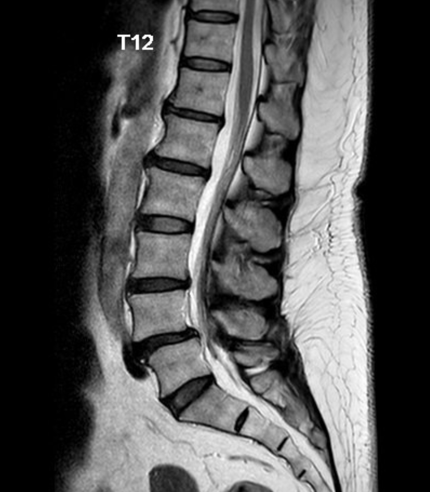
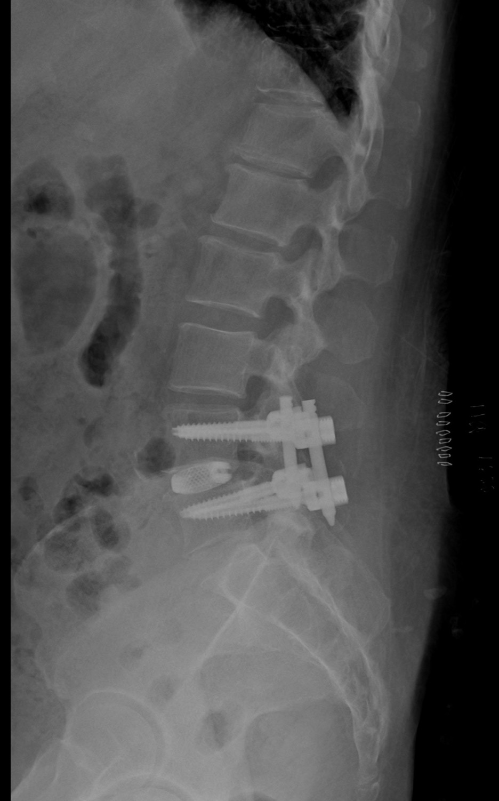
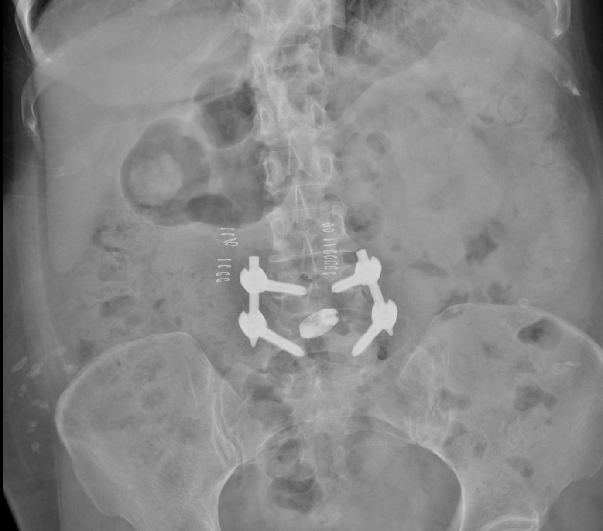
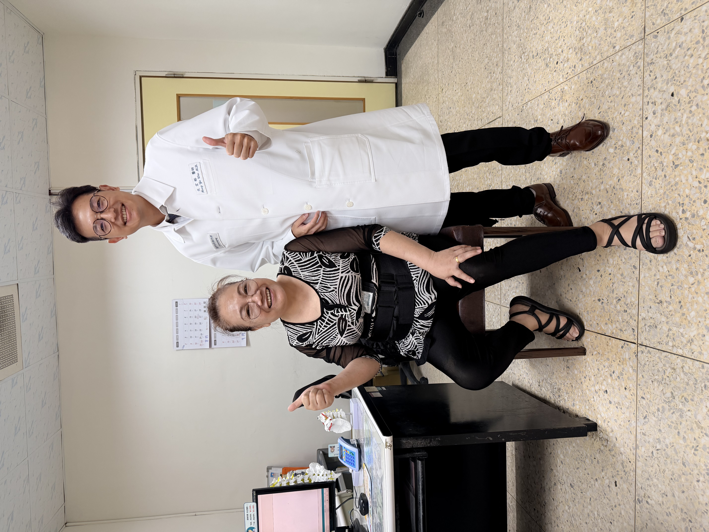

長期腰酸背痛、左大腿麻痛，連日常生活都受到影響
58 歲的蘇女士，長期受到腰酸背痛困擾。一開始，她以為只是年紀到了、工作或家事太累，休息一下、貼痠痛貼布、吃止痛藥就會好。
但隨著時間拉長，腰痛不但反覆發作，還開始合併左側大腿麻痛。有時站久、坐久會覺得左大腿越來越麻、越來越痠，甚至影響走路與日常活動。
原本簡單的生活動作，像是外出走路、久站、做家事，都變得需要忍耐疼痛。對蘇女士來說，最困擾的不是影像上看到什麼問題，而是生活被疼痛慢慢限制住。
檢查發現：腰椎退化合併神經壓迫與不穩定
經過門診詳細問診、理學檢查與影像評估後，發現蘇女士的症狀並不是單純肌肉痠痛。
術前 MRI 顯示，腰椎退化造成神經受到壓迫，這與她長期腰酸背痛、左大腿麻痛的症狀相符合。
同時，腰椎結構也有不穩定的情況。在這種狀況下，若只是單純把神經壓迫打開，可能無法完整解決腰椎不穩造成的問題。
因此，治療重點不只是「減壓」，還需要同時考慮：
- 如何解除神經壓迫？
- 如何重新穩定腰椎結構？
- 如何讓她有機會回到正常生活？

圖片說明：術前 MRI 可見腰椎退化造成神經空間受壓，與左大腿麻痛症狀相符。
治療考量：不是每個腰椎問題都需要融合，但不穩定時就要重建支撐
腰椎手術不是越大越好，也不是每個腳麻、腰痛都需要打骨釘。
如果只是單純神經壓迫，且腰椎結構仍然穩定，許多患者可以評估微創減壓手術。但如果同時合併腰椎不穩、滑脫或明顯退化，單純減壓可能不夠，甚至可能讓不穩定的問題更明顯。
蘇女士的情況，除了神經受到壓迫，也有腰椎結構不穩定的問題。經過完整評估與討論後，決定接受微創腰椎融合手術。
手術目標是：
精準解除神經壓迫，同時重建腰椎穩定度。
治療方式：微創腰椎融合手術
蘇女士接受微創腰椎融合手術。
手術透過較小傷口與微創通道進行，減少對背部肌肉與正常組織的破壞。在解除神經壓迫後，再置入椎間支架與固定系統，幫助不穩定的腰椎重新建立支撐。
這類手術的重點不是「打骨釘」本身，而是在腰椎已經不穩定時，透過適當固定與融合，讓神經不再反覆受到壓迫，也讓脊椎結構恢復穩定。


治療後變化：從疼痛限制生活，到重新恢復日常活動
手術後，蘇女士的左大腿麻痛逐漸改善，腰部不適也隨著恢復過程慢慢減輕。
在術後照護與復健調整下，她逐步恢復下床活動，也重新找回原本被疼痛限制的日常生活。
對她來說，最重要的改變不是影像變漂亮，而是可以比較安心地走路、活動，生活不再一直被腰痛與腿麻牽著走。
每位患者恢復速度不同，仍會受到神經壓迫時間、退化程度、肌肉狀況、骨質條件與術後復健影響。
但對蘇女士而言，這次治療讓她有機會重新回到正常生活。

文宏裕醫師的治療觀點
腰椎手術的重點，不是看到退化就開刀，也不是一律打骨釘。
真正重要的是判斷：
- 疼痛是不是來自神經壓迫？
- 神經壓迫的位置和症狀是否相符？
- 腰椎結構穩不穩？
- 只需要減壓，還是需要同時重建穩定？
蘇女士的案例提醒我們，長期腰酸背痛合併單側大腿麻痛，不一定只是單純老化或肌肉疲勞。
如果症狀反覆發作，甚至已經影響走路、工作或日常生活，就應該進一步評估是否有腰椎神經壓迫或脊椎不穩定的問題。
不該開的刀，我不開；該開的刀，我做到最好。
手術不是目的，重新回到生活才是目的。
把時間留給生活，不留給疼痛。
案例提醒
本案例已去識別化處理，內容僅作為疾病與治療方式說明。
每位患者的病況、影像表現、治療方式與恢復速度都不同，實際治療仍需經由門診評估、理學檢查與影像判讀後，由醫師與患者共同討論決定。
手術不是目的，重新回到生活才是目的。
把時間留給生活，不留給疼痛。